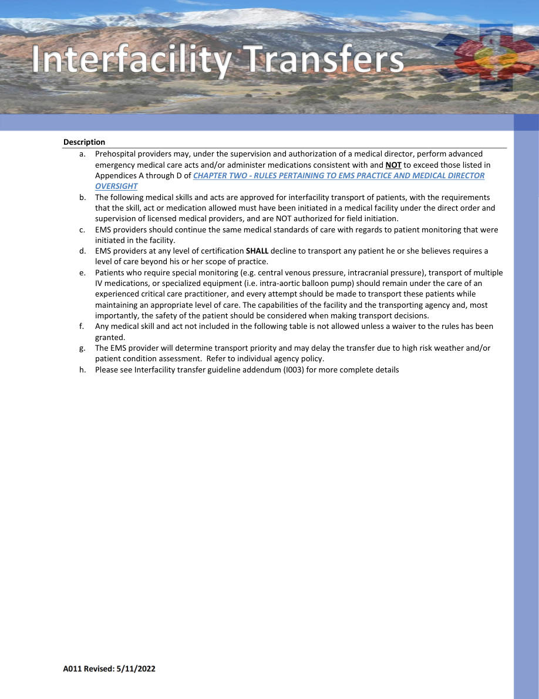
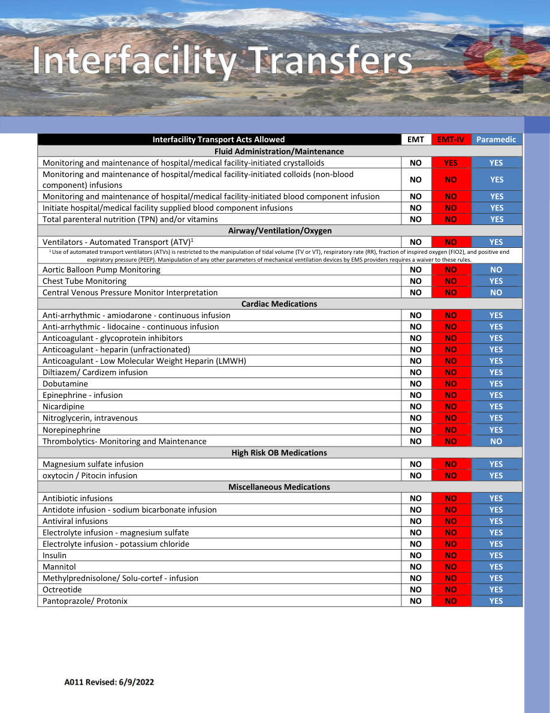

A011 — OVERSIGHT
General Guidelines • Pages 20-21
Use the scanned pages to see the official tables/charts/algorithms. The extracted text is there for copy/paste and searchability.
Extracted text (page 20)
A011 Revised: 5/11/2022 Description a. Prehospital providers may, under the supervision and authorization of a medical director, perform advanced emergency medical care acts and/or administer medications consistent with and NOT to exceed those listed in Appendices A through D of CHAPTER TWO ‐ RULES PERTAINING TO EMS PRACTICE AND MEDICAL DIRECTOR OVERSIGHT b. The following medical skills and acts are approved for interfacility transport of patients, with the requirements that the skill, act or medication allowed must have been initiated in a medical facility under the direct order and supervision of licensed medical providers, and are NOT authorized for field initiation. c. EMS providers should continue the same medical standards of care with regards to patient monitoring that were initiated in the facility. d. EMS providers at any level of certification SHALL decline to transport any patient he or she believes requires a level of care beyond his or her scope of practice. e. Patients who require special monitoring (e.g. central venous pressure, intracranial pressure), transport of multiple IV medications, or specialized equipment (i.e. intra‐aortic balloon pump) should remain under the care of an experienced critical care practitioner, and every attempt should be made to transport these patients while maintaining an appropriate level of care. The capabilities of the facility and the transporting agency and, most importantly, the safety of the patient should be considered when making transport decisions. f. Any medical skill and act not included in the following table is not allowed unless a waiver to the rules has been granted. g. The EMS provider will determine transport priority and may delay the transfer due to high risk weather and/or patient condition assessment. Refer to individual agency policy. h. Please see Interfacility transfer guideline addendum (I003) for more complete details
Extracted text (page 21)
A011 Revised: 6/9/2022 Interfacility Transport Acts Allowed EMT EMT‐IV Paramedic Fluid Administration/Maintenance Monitoring and maintenance of hospital/medical facility‐initiated crystalloids NO YES YES Monitoring and maintenance of hospital/medical facility‐initiated colloids (non‐blood component) infusions NO NO YES Monitoring and maintenance of hospital/medical facility‐initiated blood component infusion NO NO YES Initiate hospital/medical facility supplied blood component infusions NO NO YES Total parenteral nutrition (TPN) and/or vitamins NO NO YES Airway/Ventilation/Oxygen Ventilators ‐ Automated Transport (ATV)1 NO NO YES 1 Use of automated transport ventilators (ATVs) is restricted to the manipulation of tidal volume (TV or VT), respiratory rate (RR), fraction of inspired oxygen (FIO2), and positive end expiratory pressure (PEEP). Manipulation of any other parameters of mechanical ventilation devices by EMS providers requires a waiver to these rules. Aortic Balloon Pump Monitoring NO NO NO Chest Tube Monitoring NO NO YES Central Venous Pressure Monitor Interpretation NO NO NO Cardiac Medications Anti‐arrhythmic ‐ amiodarone ‐ continuous infusion NO NO YES Anti‐arrhythmic ‐ lidocaine ‐ continuous infusion NO NO YES Anticoagulant ‐ glycoprotein inhibitors NO NO YES Anticoagulant ‐ heparin (unfractionated) NO NO YES Anticoagulant ‐ Low Molecular Weight Heparin (LMWH) NO NO YES Diltiazem/ Cardizem infusion NO NO YES Dobutamine NO NO YES Epinephrine ‐ infusion NO NO YES Nicardipine NO NO YES Nitroglycerin, intravenous NO NO YES Norepinephrine NO NO YES Thrombolytics‐ Monitoring and Maintenance NO NO NO High Risk OB Medications Magnesium sulfate infusion NO NO YES oxytocin / Pitocin infusion NO NO YES Miscellaneous Medications Antibiotic infusions NO NO YES Antidote infusion ‐ sodium bicarbonate infusion NO NO YES Antiviral infusions NO NO YES Electrolyte infusion ‐ magnesium sulfate NO NO YES Electrolyte infusion ‐ potassium chloride NO NO YES Insulin NO NO YES Mannitol NO NO YES Methylprednisolone/ Solu‐cortef ‐ infusion NO NO YES Octreotide NO NO YES Pantoprazole/ Protonix NO NO YES
Scanned pages (tables/charts preserved)
Page 20 scan
Page 21 scan
